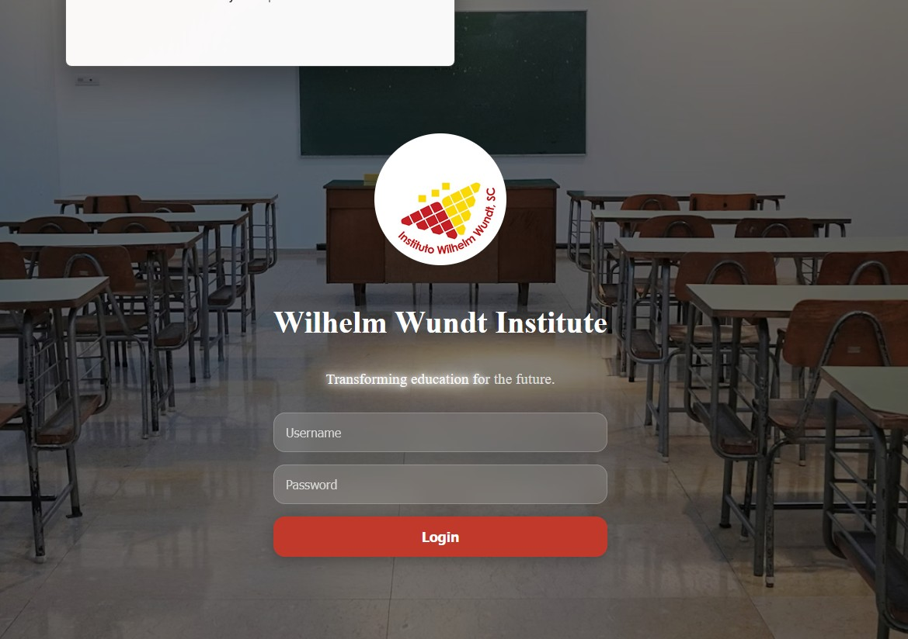

Instituto Wilhelm Wundt Student Portal

Welcome to the exclusive Student Portal of Instituto Wilhelm Wundt! This advanced digital environment is meticulously designed to provide our esteemed students with unparalleled access to all essential resources, fostering an optimal learning ecosystem for your linguistic and cognitive development.
Within this comprehensive portal, you will be able to:
- Access a curated repository of course materials, lecture notes, and supplementary academic exercises.
- Submit assignments, track your academic progress, and receive detailed feedback from our faculty.
- Engage in scholarly discussions with peers and instructors within a collaborative online forum.
- Review your personalized learning trajectory and stay informed about upcoming academic events and deadlines.
- Discover an extensive library of additional resources for autonomous study and advanced practice.
Click the link below to access the secure student portal:
Access Student Portal(Note: Secure login credentials are required for access.)